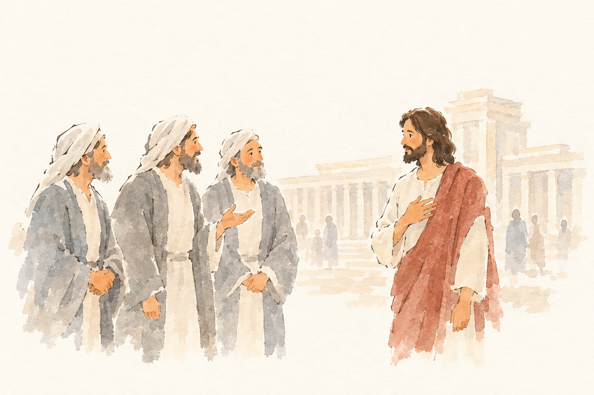
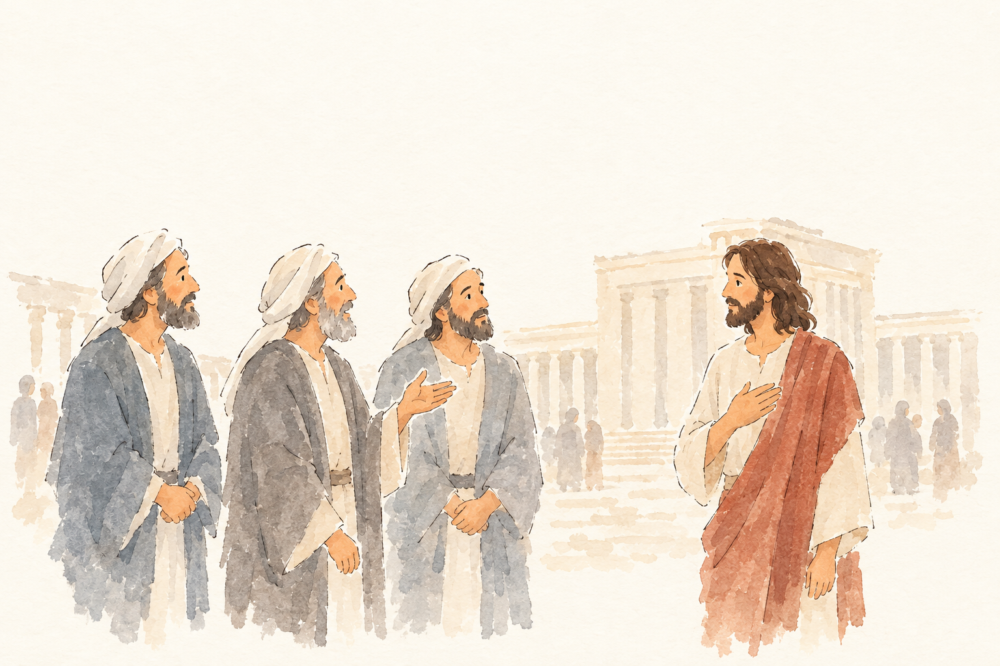
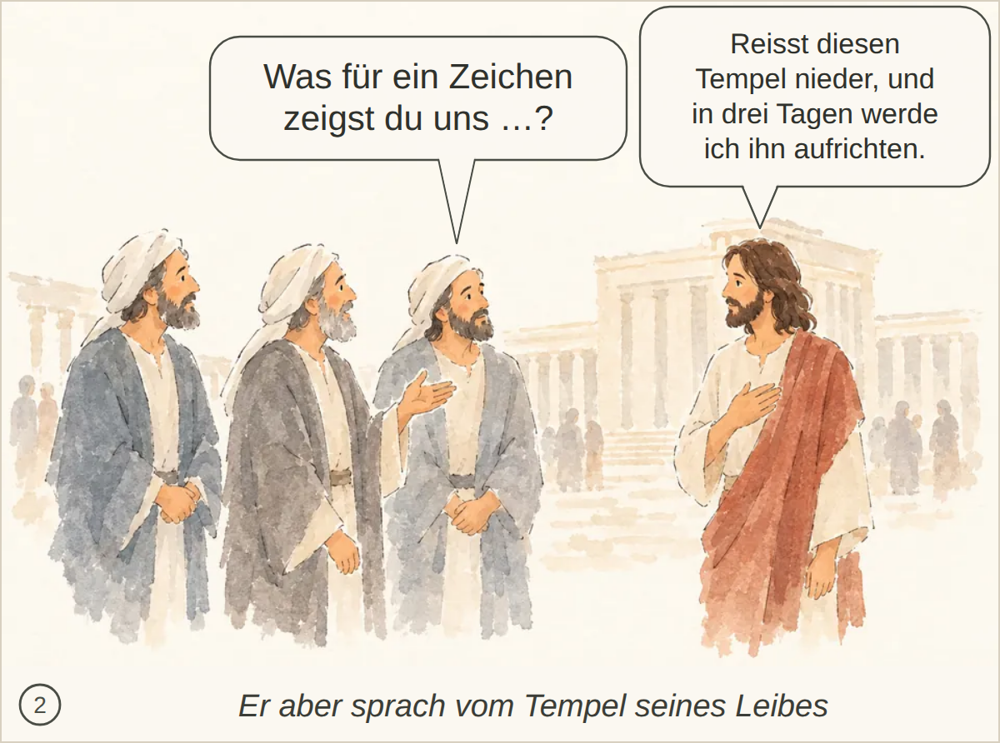

JHN-002-T2__r1v1.png: durchgefallen, 6 Punkte, Kern 1 Die konkrete Frage nach dem Zeichen und Jesu Aussage über den niederzureißenden Tempel bzw. den Tempel seines Leibes fehlen; auch die spätere Erinnerung nach der Auferweckung ist nicht erfasst.
Blind: Three robed men are speaking with or questioning a fourth robed man. The fourth man, shown apart on the right, responds calmly with one hand on his chest. – Possibly a Bible scene showing Jesus in or near the temple being questioned by religious leaders or elders, at the moment of discussion or challenge.

JHN-002-T2__r1v2.png ✔ gewählt: bestanden, 6 Punkte, Kern 1 Die Frage nach dem Zeichen und Jesu Aussage «Reisst diesen Tempel nieder…» fehlen; auch das Missverständnis Tempelgebäude vs. Leib und die spätere Erinnerung der Jünger werden nicht erkannt.
Blind: Three robed men stand together on the left and appear to be speaking with or listening to the robed man on the right. The third man gestures with his hand, while the man on the right touches his chest as if responding calmly. – This may illustrate a Bible scene of Jesus speaking with religious teachers or disciples near the Temple, possibly a teaching or questioning moment in Jerusalem. The exact story is not identifiable from the image alone.

Kachel: bestanden, Kern 2 Keine wesentlichen Abweichungen; die spätere Erinnerung der Jünger nach der Auferweckung wird höchstens nicht dargestellt.